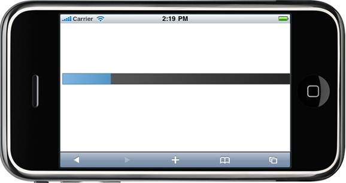

1. In the controller, create an instance of the MobProgressBarPropertiesModel
2. Define the Maximum, Minimum, StepValue and Value property and pass the instance through the view-specific data to the view.
[CONTROLLER]
public
ActionResult
Index()
{
MobProgressBarPropertiesModel pBar = newMobProgressBarPropertiesModel(); pBar.Value = 30; pBar.Width = 500; pBar.Height = 22; pBar.Maximum = 100; pBar.Minimum = 10; pBar.Value = 20; pBar.StepValue = 10;
ViewData[
"progressBar "
] = pBar;
return
View();
}
|
3. In View, invoke the ProgressBar helper with the control id and view data key as arguments.
|
[ASPX] <% = Html.MobSyncfusion().ProgressBar("pBar", "progressBar")%> |
|
[Razor]
@{ Html.MobSyncfusion().ProgressBar("pBar", "progressBar").Render(); }
|
4. Build and run the application, the output will be as follows.

Figure 88: ProgressBar with range set